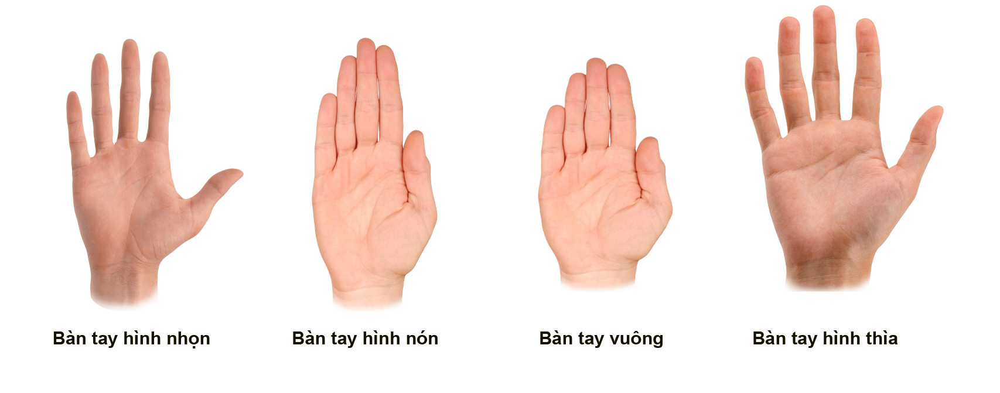
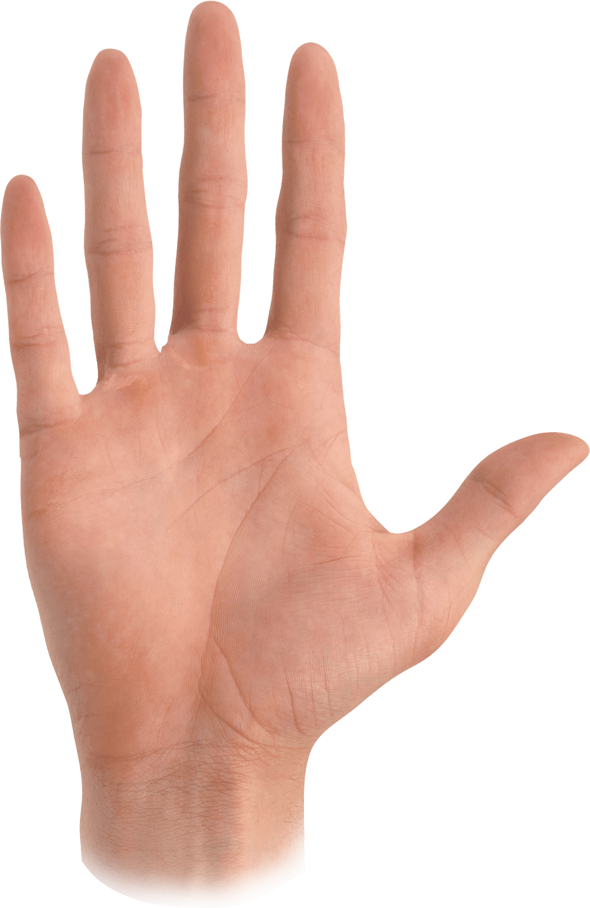
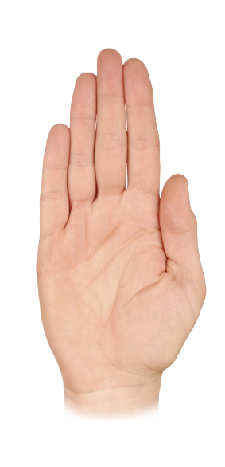
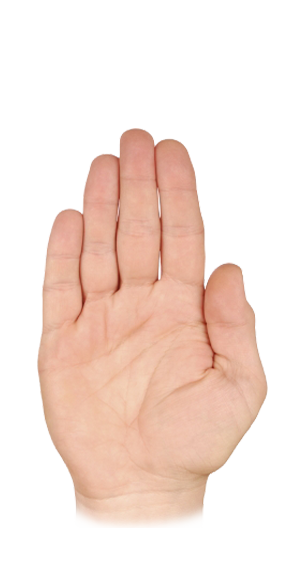
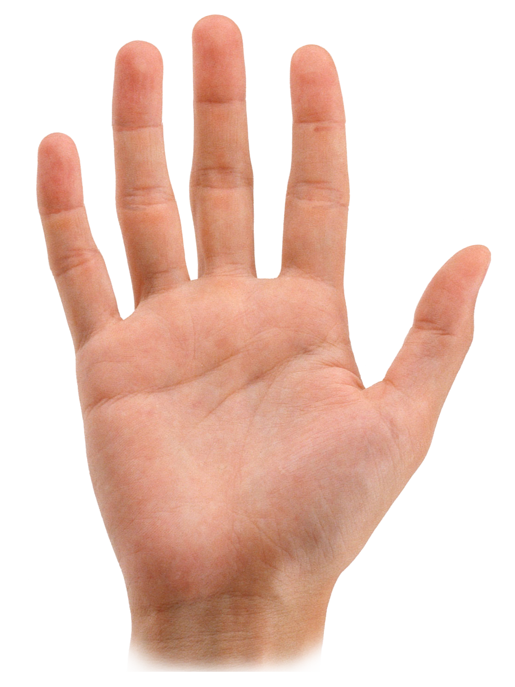
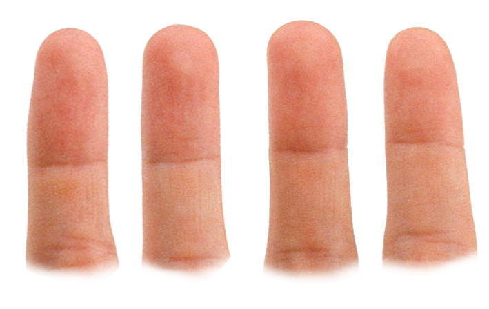
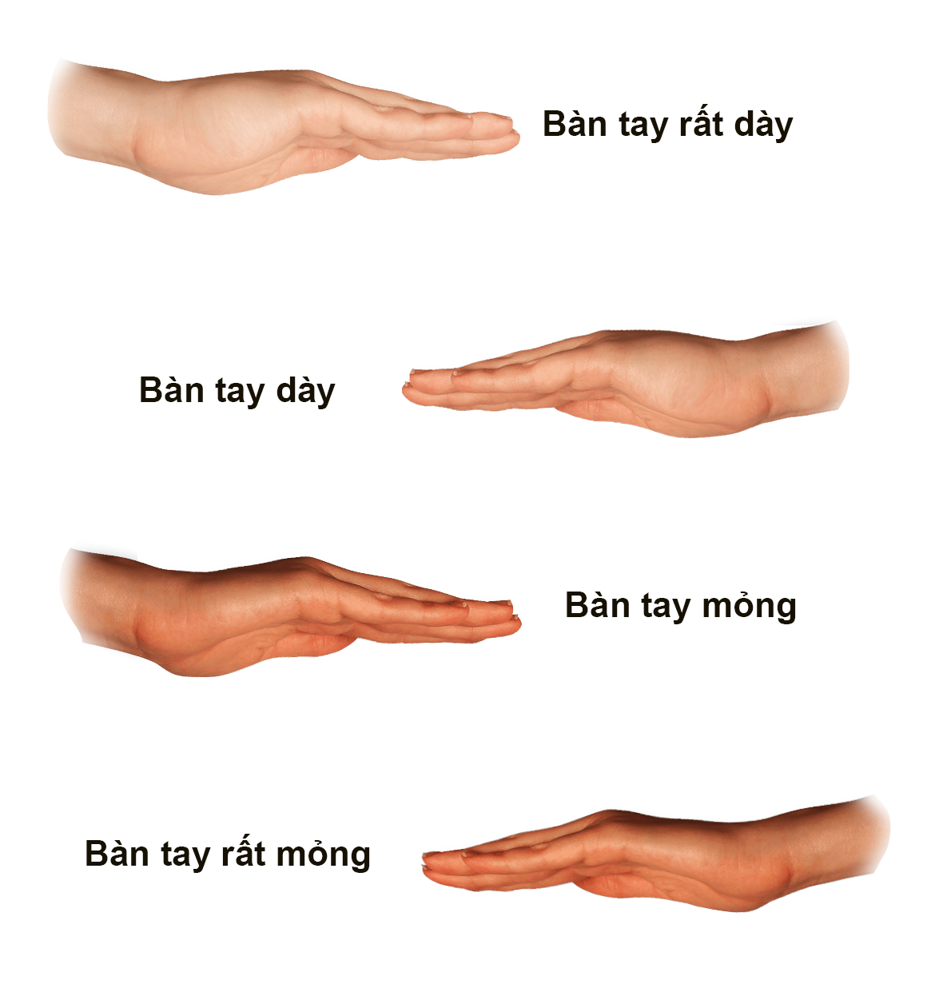

Các đặc điểm chung của bàn tay Trước khi nghiên cứu các đường chỉ tay và các đặc điểm của
lòng bàn tay, các đặc điểm khác của cả bàn tay cũng cho biết một số dấu hiệu về tính cách
con người. Bạn nên thu thập toàn bộ những thông tin này để có một bức tranh khái quát. Ngoài
ra, hãy chú ý đến cả sắc tố của da và kết cấu của bàn tay. Hình dạng của bàn tay.

Xác định hình dạng tổng thể của bàn tay bằng cách cầm bàn tay lên và để lòng bàn tay đối diện với mặt bạn, và từ đó xác định hình dạng của bàn tay. Bàn tay nhọn hay bàn tay “huyền bí” Khổ bàn tay hẹp, ngón giữa nhô cao hơn so với các ngón khác. Những người sở hữu bàn tay này có khả năng trực giác và giác quan thứ sáu nhạy bén. Đây là những người có ngoại hình ưa nhìn, họ thường tìm kiếm sự hoàn thiện xung quanh cũng như sự hoàn thiện ngay chính trong bản thân họ.

Bàn tay hình nón hay bàn tay “nghệ sĩ” Bàn tay tròn trịa và mềm mại này được gọi như vậy vì những người sở hữu bàn tay này đều có một thị giác cực tốt và có tố chất nghệ sĩ. Về bản chất, họ là người duy cảm, luôn muốn được chiêm ngưỡng và hưởng thụ tất cả cái đẹp trong cuộc sống.

Bàn tay hình vuông hay bàn tay “hữu dụng” Bàn tay này thuộc về những người luôn muốn được giúp đỡ người khác. Họ có tư duy logic, thạo máy móc. Tay chân họ lúc nào cũng luôn bân rộn .

Bàn tay có hình thìa (hình lá) hay bàn tay “cần thiết” Lòng bàn tay mở rộng ra từ góc tay hẹp. Những người có bàn tay này muốn mọi thứ phải được hoàn tất. Họ sẽ làm bất cứ điều gì cần thiết để thành công và có đủ kiên trì, thông minh để đạt được điều đó. Để thời gian trôi qua vô ích là điều mà những người có bàn tay kiểu này rất ghét.

Tỉ lệ của bàn tay Sự khác nhau về chiều dài giữa lòng bàn tay và các ngón tay có thể dễ dàng nhìn thấy bằng mắt thường hoặc đơn giản chỉ cần dùng cây thước kẻ đo dọc theo toàn bộ bàn tay thì bạn có thể đánh giá ngay tỉ lệ giữa các ngón tay và lòng bàn tay. Lòng bàn tay dài hơn các ngón tay Người có lòng bàn tay dài hơn các ngón tay thường hay gặp khó khăn khi phải nói không với những ý tưởng chợt đến trong đầu. Họ là những người có ý tưởng và mơ ước, có khả năng vạch ra kế hoạch lớn, nhưng lại cần phải dè chừng hội chứng “Để mai hẳng hay”. Họ là tuýp người sáng tạo, thường là nhạc sĩ hoặc họa sĩ. Ngón tay và lòng bàn tay dài bằng nhau Đây là những con người công bằng, rất dễ thích ứng với những thăng trầm trong cuộc sống và có tính cách kiên định cả về mặt thể chất lẫn tinh thần. Những người này có khả năng hoàn thành mọi việc đến cùng và có cách tiếp cận cuộc sống khá logic. Họ rất hiếm khi gặp vấn đề về sức khỏe. Lòng bàn tay ngắn hơn các ngón tay Những người có lòng bàn tay ngắn hơn các ngón tay sẽ luôn để trực giác bản năng mách bảo mình trong suốt cuộc đòi. Họ giàu trí tưởng tượng và nhạy cảm. Những người này có tâm trạng yếu và thỉnh thoảng gặp vấn đề về sức khỏe. Hình dạng ngón tay

Khi xem xét hình dạng của các ngón tay, hãy để lòng bàn tay ngang mặt, chỉ để ý đến hình dạng chung của ngón tay chứ không để để ý đến móng tay. Nhiều người có các ngón tay hình dạng khác nhau nên hãy tìm hình dạng chung nhất. Trong trường hợp này, bạn cũng nên để ý đến sự ngắn dài, khoảng cách cũng như các hoa văn trên các ngón tay để có thể giải thích về chúng ở bước sau. Đầu ngón tay nhọn Là người tỉ mỷ và chính xác, những người này thường có con mắt sành sỏi về màu sắc, thiết kế và hình dạng. Họ thuộc tuýp người tao nhã, có gu thẩm mỹ và thị hiếu cao. Điều này có thể cảm nhận qua quần áo và ngôi nhà họ sống. Đầu ngón tay hình nón Những cá nhân này mang những niềm tin bản năng về chính bản thân họ, có khả năng hiểu biết nội tâm lớn về hoàn cảnh và những mối bận tâm của người khác. Nhìn chung họ là những người rất hấp dẫn có tinh hồn kinh tế với tính cách nhẹ nhàng, luôn sẵn lòng giúp người khác. Đầu ngón tay hình vuông Những người thích sống đơn giản và chỉ cần những niềm vui nho nhỏ cũng làm họ thấy hạnh phúc. Họ làm việc rất tốt và có khả năng kiếm tiền dễ dàng, giỏi làm kinh doanh. Họ luôn luôn đúng mực và thận trọng khi tiếp xúc với người khác. Đầu ngón tay hình thìa Rất thông minh và dí dỏm, những người này có khiếu hài hước cao và đầu óc lanh lợi. Họ rất năng động, luôn tìm kiếm cho mình một công việc yêu thích và làm việc không ngừng nghỉ. Là người dễ thích ứng, họ có khả năng đối nhân xử thế. Độ dày của bàn tay

Để bàn tay nghiêng sang một bên, xem xét độ dày và độ mềm của bàn tay. Bàn tay rất dày và thô Những người có bàn tay này thường có xu hướng cư xử khá cứng nhắc, thô lỗ theo nhu cầu cơ bản của chính bản thân mình, cho nên đôi lúc họ có nhũng suy nghĩ thô bạo. Bàn tay dày và thô Những người này có những nhu cầu rất căn bản là ăn, ở và yêu. Không có tham vọng, nên họ khá hờ hững với những cuộc tranh giành quyết liệt và rất vất vả trong cuộc sống. Bàn tay dày và thô vừa Những người này làm việc tốt, luôn luôn đáng tin cậy. Cuộc sống của họ không phải lúc nào cũng dễ dàng nhưng họ biết bằng lòng với nó. Bàn tay dày và mềm vừa Những người này làm việc hết mình và chơi cũng hết mình. Họ muốn được sống vui vẻ với mọi người xung quanh và thích được mọi người để ý mình. Bàn tay dày và mềm Các nghệ sĩ, nhà thơ hay nhạc sĩ thường có bàn tay này, nhưng họ không phải là những người thợ giỏi. Họ có xu hướng mơ mộng và suy ngẫm về cuộc đời. Bàn tay mỏng và rất thô Những người có bàn tay này có những kỹ năng chiến lược và là người khá tính toán. Họ là tuýp nguòi khó gần và phải mất thời gian để có thể làm quen với những con người này. Bàn tay mỏng và thô Những người sở hữu bàn tay loại này thường ích kỷ và bảo thủ. Để kết bạn với những người này không phải dễ, vì họ không thích chia sẻ và khá ngang ngạnh. Bàn tay mỏng và mềm Luôn là người cuối cùng rời khỏi bữa tiệc, những người này khó nói lời từ chối nên dễ bị cám dỗ. Bàn tay mỏng và rất mềm Nhóm người này có trực giác nhạy bén nhưng lại có xu hướng tập trung vào mục tiêu, nên hay có những phản ứng gây gắt và bực bội với người khác.